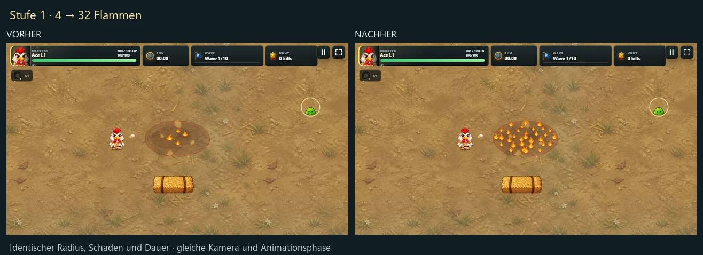
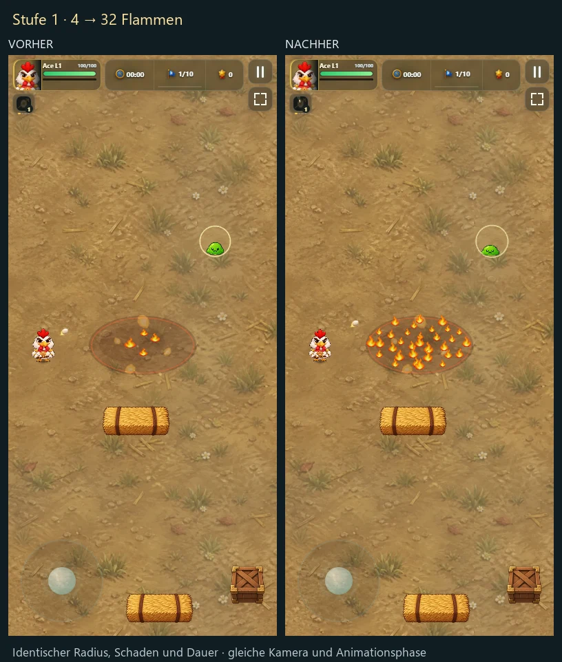
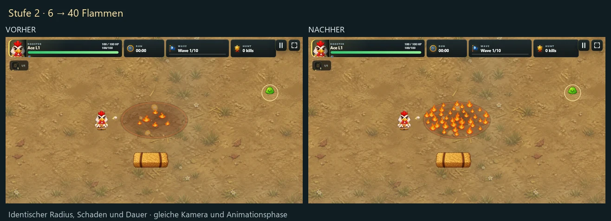
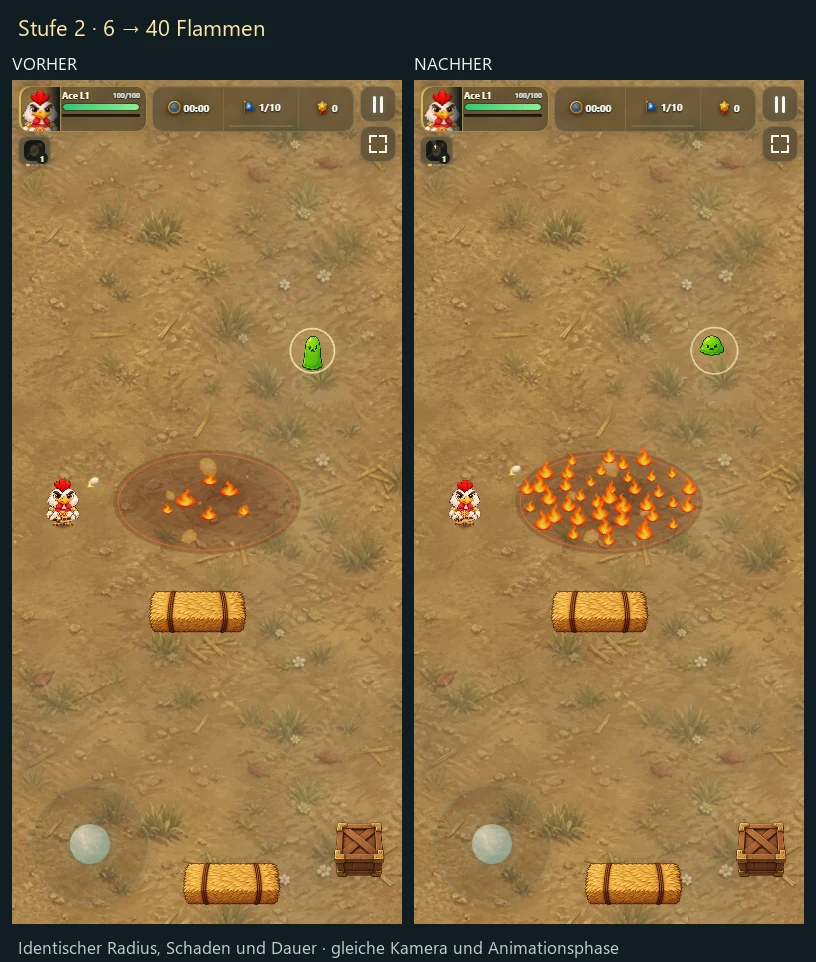
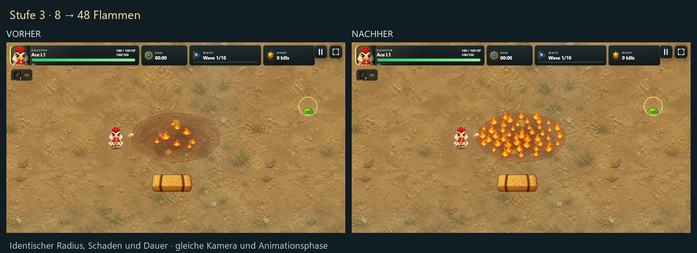
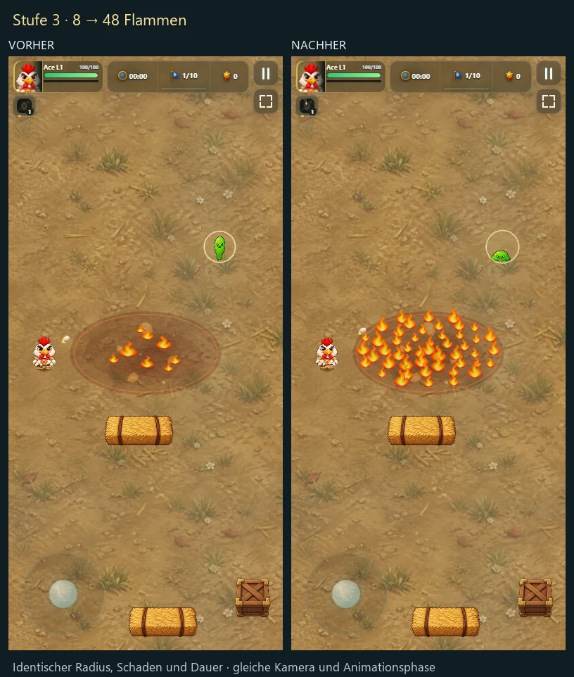
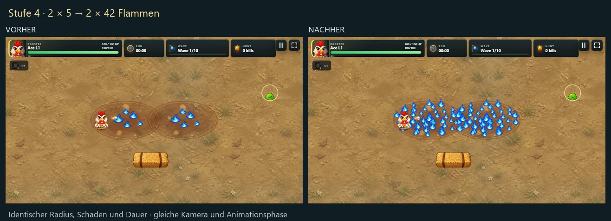
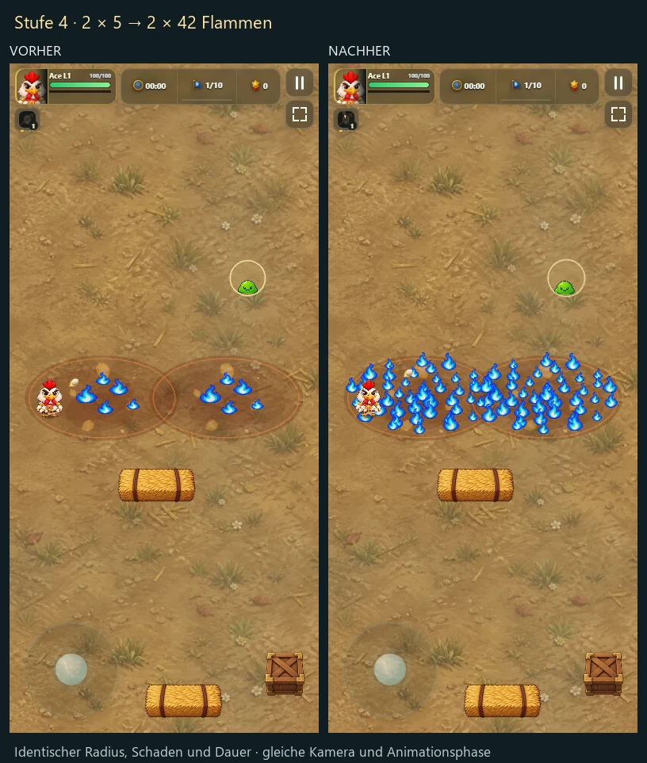
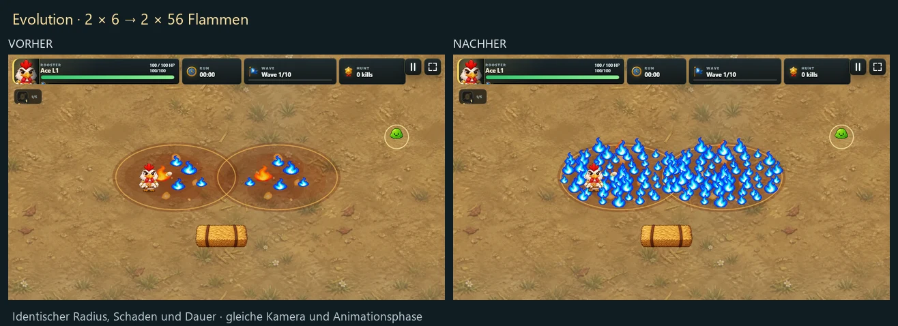
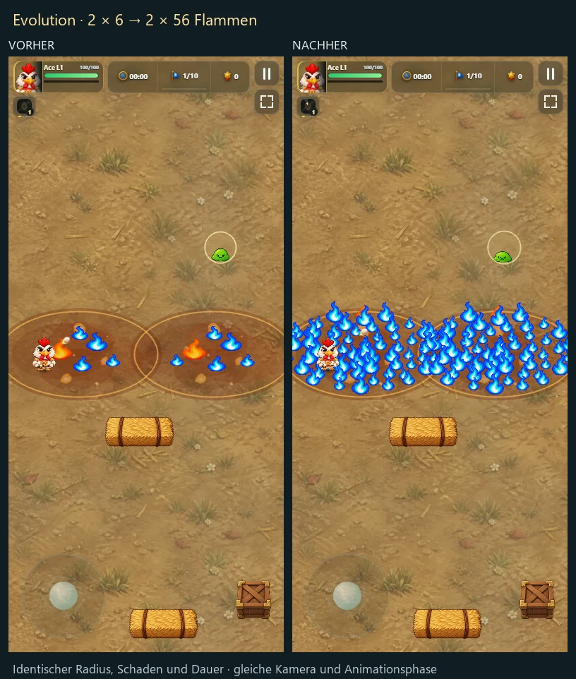

Molotov: klare Brandflächen ab Stufe 1
Jeder Vergleich zeigt vorher und nachher auf einem Bild. Bestehende Flammensprites, unveränderte Schadenswerte und identische Kameraposition. Die ursprüngliche ovale Bodenperspektive bleibt erhalten; nur die Flammenbesiedlung wird dichter.
Stufe 1 — 4 → 32 Flammen

Mobil im Hochformat

Stufe 2 — 6 → 40 Flammen

Mobil im Hochformat

Stufe 3 — 8 → 48 Flammen

Mobil im Hochformat

Stufe 4 — 2 × 5 → 2 × 42 Flammen

Mobil im Hochformat

Evolution — 2 × 6 → 2 × 56 Flammen

Mobil im Hochformat

Beurteilung
Schon auf Stufe 1 füllen viele unterschiedlich große Flammen Rand und Mitte, ohne große Leerflächen. Stufe 2 und 3 verdichten die Fläche; Stufe 4 zeigt zwei blaue Felder und die Evolution zwei größere, dichtere Felder. Die Evolution darf im Hochformat über die Kamera hinausreichen: Der Weltbereich wird nicht künstlich verkleinert.
Die bewusst dezente Bodenmarkierung unterstützt die Flammen. Zusätzliche Rauchwolken oder Screen-Blitze würden Gegner und Geschosse verdecken und sind für dieses Ziel kein besserer Weg. Die vorhandene Perspektive passt weiterhin zur Spielgrafik und wurde beibehalten.
Prüfung und Grenzen · Technische Messwerte